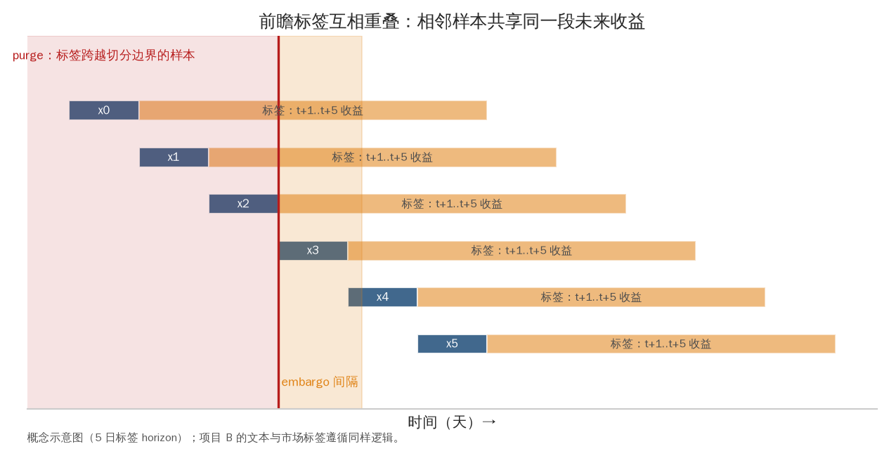
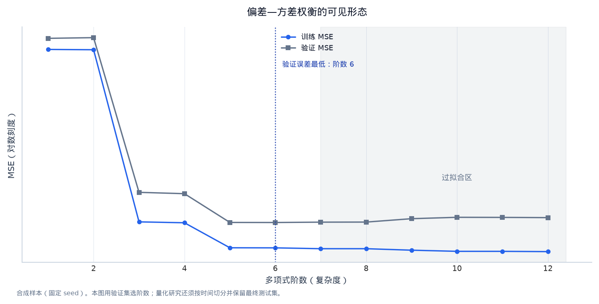
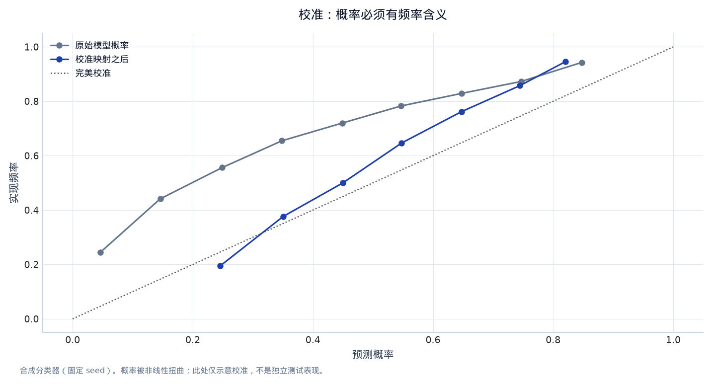
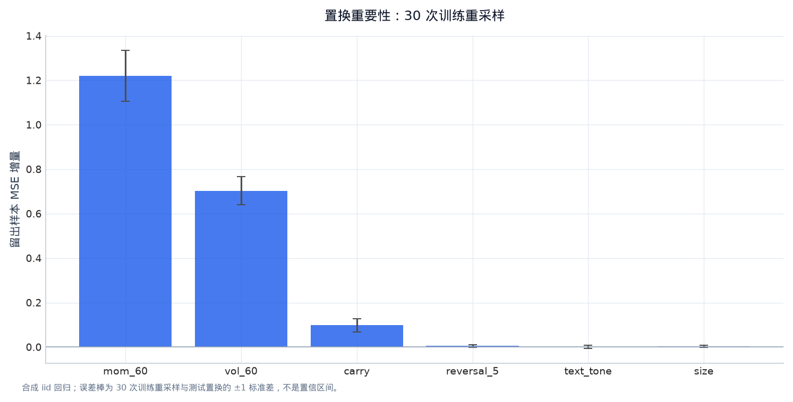
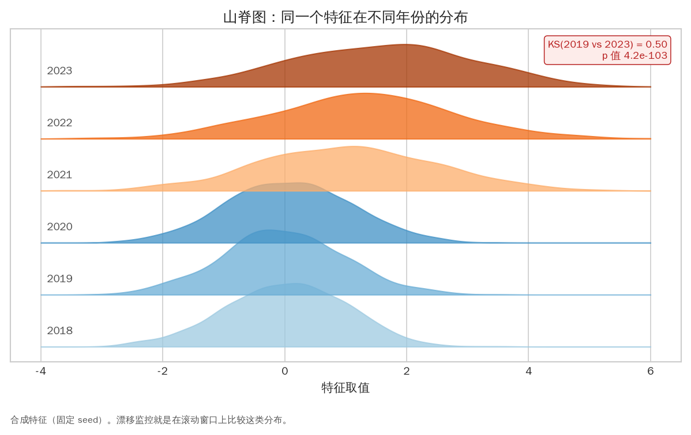

第七章：机器学习用于量化研究（ML for Quant Research）¶
ML4Quant 的重点不是把金融数据塞进神经网络，而是定义一个没有泄漏的预测任务，知道模型在什么条件下有效，并把预测转换成成本后仍合理的组合。本章先建立最小可行方法，再讨论更复杂模型。
0. 学习目标¶
完成本章后，你应当能够：
- 区分 supervised、unsupervised、reinforcement learning 在量化中的角色；
- 定义 features、labels、horizon、loss 和 decision rule；
- 选择时间序列切分、滚动训练和 purged/embargo 验证；
- 理解 linear/ridge、tree、boosting、neural network 的偏差-方差取舍；
- 评估回归、分类和截面排序模型的预测与交易质量；
- 解释正则化、标准化、概率校准、特征重要性和 model drift；
- 知道什么时候简单模型比深度模型更适合量化研究。
1. ML 在量化系统中的位置¶
一个完整系统可写为：
raw data -> point-in-time features -> model prediction
-> portfolio/risk constraints -> execution -> PnL/monitoring
ML 主要负责从特征估计：
但它不自动决定交易数量、成本、限额和退出规则。若预测目标是未来收益，模型输出为 \(\hat y\)，还要经过仓位映射、风险缩放和成交模拟。
2. 三类学习问题¶
2.1 Supervised learning（监督学习）¶
有输入 \(X\) 和标签 \(y\)，学习从过去样本预测未来标签。量化例子：
- 回归：预测未来五日 excess return；
- 分类：预测下一日上涨/下跌；
- ranking：按未来收益排序资产；
- survival/time-to-event：预测违约或事件发生时间。
2.2 Unsupervised learning（无监督学习）¶
没有明确标签，寻找结构：
- PCA/因子模型降维；
- clustering 市场状态或资产；
- anomaly detection 发现异常行情、数据错误或风险漂移；
- autoencoder 表示学习。
聚类得到“状态”不代表该状态有交易价值，需要样本外检验和经济解释。
2.3 Reinforcement learning（强化学习）¶
智能体与环境交互，通过 reward 学策略。它可能用于执行、做市或动态资产配置，但市场环境非平稳、奖励稀疏、交易成本和安全约束让样本需求很高。对实习研究，先掌握监督学习和严谨回测通常更有价值。
3. 定义标签（Label/Target）¶
3.1 回归标签¶
未来 \(h\) 日简单收益：
也可以使用 excess return、风险调整收益、相对 benchmark 收益或 volatility-normalized return。标签的选择会决定模型学到什么：预测 raw return 可能主要学 beta，预测 residual return 更接近相对 alpha。
3.2 分类标签¶
分类输出的 accuracy 不能代替收益。若正负样本不平衡，precision、recall、ROC-AUC、PR-AUC 和概率校准更有信息；最终仍应看把概率转成仓位后的 net PnL。
3.3 排序标签¶
横截面研究经常只关心相对顺序：未来收益排名、分位数组合收益或 pairwise ranking loss。排序模型不必精确预测收益尺度，但要检验 rank IC、分位数单调性、换手和成本。
3.4 Label horizon 与 overlap¶
若每个样本使用未来五日收益，相邻日期标签重叠，样本并不独立。训练/验证边界要 purge，评估有效样本量，不能直接把日样本数量当成独立观测数。

图 7-1｜重叠标签与 purge/embargo。 每行是一个样本：蓝色是特征日，橙色是它未来 5 日的标签窗口。相邻样本的标签互相重叠，因此跨越切分边界的样本（红色 purge 区）必须删除，边界后还要留 embargo 间隔，否则验证集信息渗进训练集。数据类型：概念示意图（5 日标签 horizon）。
4. Feature engineering（特征工程）¶
常见特征类别：
- price/technical：lagged return、moving average、volatility、range、volume；
- cross-sectional：rank、industry-relative、market-relative；
- fundamental：valuation、profitability、leverage、earnings revisions；
- macro/rates：yield curve、inflation、credit spread、FX；
- microstructure：spread、depth、order imbalance、realized volatility；
- text/alternative：词典分数、事件、embedding、网页/供应链指标。
特征必须满足：可见性、单位、稳定覆盖、训练时可计算、缺失可解释。避免把多个高度相关版本无目的地全部加入模型，先做 feature audit。
4.1 Standardization¶
对特征做 z-score：
时间序列中 \(\mu_t,\sigma_t\) 必须用历史窗口或训练集估计；不能用包含未来的全样本统计量。横截面 z-score 与时间序列 z-score 的含义不同：前者比较同一天资产，后者比较同一资产自身历史。
4.2 Missing values¶
缺失不是统一的 0：它可能表示停牌、数据未披露、供应商错误或资产不存在。选择删除、前值、缺失 indicator 或模型原生处理时，要说明经济含义，并检查缺失模式是否本身泄漏未来。
5. Bias-variance 与模型选择¶
预测误差可概念性分成：
- 高 bias：模型太简单，训练和测试都欠拟合；
- 高 variance：模型太灵活，记住训练噪声，测试崩溃；
- irreducible noise：特征无法解释的随机性。
量化样本通常少、噪声高、关系变化快。复杂度应由样本外稳定性、数据量、执行收益和可解释性证明，而不是由模型名字决定。

图 7-2｜复杂度与过拟合的 U 形曲线。 训练 MSE 随复杂度单调下降，测试 MSE 先降后升：测试最低点对应可选复杂度，右侧红色区域是过拟合区。量化数据噪声更高、样本更少，这条 U 形通常更陡，所以复杂度必须由样本外稳定性证明。数据类型：固定 seed 合成样本；量化研究中 test 还必须在时间上更晚。
5.1 Linear/Ridge¶
线性模型：
Ridge 通过惩罚系数平方控制过拟合：
\(\lambda\) 越大，系数越接近 0，方差下降但可能增加偏差。Ridge 对多重共线性较稳健，适合作为强 baseline。项目 B 实现了 numpy-only Ridge，方便理解矩阵和时间切分。
5.2 Tree、boosting 和神经网络¶
- Decision tree：分段规则，能捕捉非线性但容易过拟合；
- Random forest：多棵随机树平均，降低方差但可能丢失细微时间结构；
- Gradient boosting：逐步拟合残差，常有很强的表格数据表现，但超参数和时间验证必须严格；
- Neural network：通过层叠非线性学习表示，适合大量样本、图像、文本或复杂序列；金融小样本中未必比线性模型更好。
复杂模型加入前，先证明它在完全冻结的验证集、不同成本和子时期上改善了简单 baseline。
6. Loss、metric 与 trading metric¶
6.1 训练损失¶
回归常用 MSE：
MAE 对异常值更稳健；Huber loss 在平方和绝对值之间折中。分类常用 log loss/cross-entropy：
损失越低不等于净收益越高。模型可能改善极小的均方误差，却不能改变排序或无法覆盖成本。
6.2 评估层次¶
- prediction：MSE、MAE、AUC、log loss、calibration；
- cross-sectional：IC、rank IC、top-bottom spread、分位数单调性；
- portfolio：net return、Sharpe、drawdown、turnover、capacity、exposure；
- stability：年份、regime、资产、成本和延迟；
- operational：特征新鲜度、预测延迟、异常和模型漂移。
最终岗位是 QR/QT 时，必须能把 prediction metric 连接到 trading metric。
7. Time-aware validation¶
7.1 Rolling/expanding training¶
- expanding window：从最初日期不断加入新数据，适合关系稳定；
- rolling window：保持固定长度，适合 regime 变化但样本更少；
- walk-forward：每个验证区间只使用其以前的数据。
超参数选择也必须在训练/验证流程内部完成。不能先看 test Sharpe 再选择窗口。
7.2 Purge、embargo 与 grouped split¶
未来窗口重叠时，删除边界训练样本（purge）；在训练与验证之间留空（embargo）。若一个公司一天有多个文本、或一个事件产生多个样本，还要按 event/group 切分，避免同一事件的不同版本落入两侧。
8. Calibration、uncertainty 与 position sizing¶
分类概率可能不校准：预测 0.8 的样本实际不一定 80% 正确。可用 reliability diagram、Brier score、Platt scaling 或 isotonic regression 检查，但校准参数同样只能用训练/验证数据。

图 7-3｜概率必须经得起频率检验。 对角线是完美校准。原始模型概率过度自信（预测高的地方实现频率更低），经过校准映射后贴近对角线。若用未校准概率做仓位缩放（预测越强仓位越大），会在错误最集中的区域下最大注。数据类型：固定 seed 合成分类器输出。
仓位可以随预测强度变化：
若预测不确定性高，可缩小仓位或要求更高的 expected edge。没有 uncertainty 估计时，至少用 ensemble、滚动稳定性或信号分位数做风险控制。
9. Feature importance 与可解释性¶
- linear coefficients：在标准化和共线性处理后解释；
- permutation importance：打乱特征观察性能变化，但相关特征会分摊重要性；
- SHAP/partial dependence：描述模型输出如何随特征变化，但不等于因果；
- ablation：去掉一类特征重跑，最适合研究报告。
解释性要围绕研究问题：模型是不是只依赖一个不稳定字段？去掉文本、市场 beta 或某一资产后是否还成立？

图 7-4｜重要性要带误差棒。 柱高是 30 次 bootstrap 重算的 permutation importance 均值，误差棒是 ±1 标准差。text_tone 与 reversal_5 的误差棒重叠，说明这两个特征的重要性排序并未被识别，不能据此讲因果故事。数据类型：固定 seed 合成模型输出。
10. Drift、retraining 与 model governance¶
市场关系会变化，数据分布也会变：
- feature drift：特征均值、波动、缺失改变；
- label drift：收益分布或命中率改变；
- concept drift：特征与标签的关系改变；
- execution drift：spread、延迟、容量改变。
部署前定义再训练频率、触发阈值、回滚版本和人工复核。不要看到一周亏损就随意调参，否则 live 结果被噪声追着走。

图 7-5｜特征漂移的可见形态。 山脊图把同一特征按年份叠放：2021 年起均值右移、方差变大，2019 与 2023 的 KS 统计量接近 1。用 2018–2020 拟合的标准化参数和阈值，在 2021 年之后全部失效——这就是漂移监控要发现的问题。数据类型：固定 seed 合成特征。
11. 项目 B 的 ML 层如何阅读¶
项目 B 的学习顺序：
data.py生成确定性时间序列和文本样本；text_features.py把词典/正负词转换成可解释的 lexical feature；models.py用 mean baseline 和 numpy Ridge 建立可审计模型；evaluate.py比较 MSE、rank IC 与时间切分结果；run.py输出报告，--semantic是可选的本地 embedding 分支。
先回答：Ridge 是否改善 mean baseline？改善来自哪个特征？不同时间段是否稳定？加入语义模型后是否真正提升？只有这些问题有答案，才有理由增加模型复杂度。
12. 常见误解¶
- “ML 越复杂越适合市场。” 样本少、噪声高和关系变化使简单模型常更可靠。
- “随机交叉验证能充分利用数据。” 它破坏时间顺序并泄漏相邻标签。
- “预测误差下降就能赚钱。” 还要看排序、仓位、成本、容量和暴露。
- “特征重要性就是因果关系。” 相关特征、代理变量和模型结构会改变解释。
- “模型上线后不断调参就能适应市场。” 这可能变成 live data snooping，需要版本、触发条件和回滚。
13. 手工练习¶
练习 A：标签设计¶
为股票、期货和文本事件各设计一个标签，写出 horizon、是否重叠、交易延迟、适合的评估指标和一个可能的泄漏。
练习 B：baseline ladder¶
按复杂度写出一条模型阶梯：历史均值 → lagged return → 线性回归 → Ridge → tree/boosting → embedding。每加入一层，列出必须新增的验证和成本检查。
练习 C：时间切分¶
假设样本为 2015–2024，标签是未来 5 日收益。设计 train/validation/test 和 purge/embargo，说明为什么不能把 2024 test 每周查看后继续选模型。
PCA、GLM 与严格的模型管线¶
PCA 不是 alpha，而是风险表示¶
给定特征协方差矩阵 Sigma，单位方向 u 上的方差是 u^T Sigma u。最大化它得到第一主成分，后续成分在正交约束下依次解释剩余方差。PCA 可把许多相关资产压缩为少数风险因子、降低特征维度或帮助发现重复暴露；它只优化解释方差，不保证预测未来收益。均值、标准差和 PCA 载荷都必须只在训练窗口拟合，再应用到验证/测试。
GLM：根据目标分布选择 link¶
广义线性模型（Generalized Linear Model, GLM）保留线性预测子 eta=X^T beta，通过 g(mu)=eta 连接条件均值。连续收益常用 identity link；计数型成交/事件可用 Poisson + log link；二元事件可用 Bernoulli + logistic link。link 和损失应由标签的统计类型决定，而不是因为某个 API 名字流行。无论模型形式如何，最终仍要比较排序、组合、成本和暴露。
Pipeline 中最容易泄漏的三步¶
- 预处理泄漏：全样本标准化、填补、PCA 或词表学习把测试分布带回训练；
- 选择泄漏：看过测试 Sharpe 后选择模型、窗口、阈值；
- 标签泄漏：重叠未来收益或事件文本在切分边界共享信息。
把每一步写成 fit(train) → transform(validation/test)，并保存训练窗口、版本和参数。测试集只在最终报告使用；之后发现问题应重新建立测试集，而不是继续用同一数字调参。
中性化、表达式审计与模型增量¶
1. Cross-sectional neutralization 不是免费的去噪¶
若原始分数 \(s_{i,t}\) 与行业、规模、beta 或波动有明显关系，可以在每个日期做截面回归：
再用残差 \(u_{i,t}\) 排序或建仓，这叫 cross-sectional neutralization（截面中性化）。它能减少共同暴露，却也可能移除真正的 alpha；中性化变量本身必须在决策时点可得，且回归不能把未来样本混进来。报告中要同时给出原始和中性化版本的 IC、top-bottom spread、turnover、beta/行业暴露和成本后结果。
2. ML 特征也需要 expression audit¶
WorldQuant BRAIN 公开界面中的 delay、decay、truncation、neutralization、coverage 和 turnover 词汇，对 ML 研究同样适用：
- feature 的发布日期和修订版本相当于 alpha expression 的 delay/as-of contract；
- rolling mean、embedding、词表和标准化的训练窗口相当于 decay/transform 配置；
- winsorization、rank、缺失处理和 neutralization 会改变 coverage、暴露和交易频率；
- 模型比较必须保持同一 universe、标签、成本、时间切分和 deployment gate。
因此“semantic model 的验证准确率更高”仍不足以证明交易增量；还要问它是否增加独立信息、是否降低 coverage、是否提高 turnover、是否与已有 alpha 高相关。
3. 预测模型的增量检查¶
为每个新模型保存三种结果：
- stand-alone：模型单独转成仓位的 IC、spread 和 net PnL；
- incremental：加入既有 baseline 后的边际风险收益和 marginal turnover；
- stress：成本翻倍、覆盖率下降、信号延迟一个周期和高相关时期的结果。
只有第二项稳定为正，才有理由把模型作为组合组件。复杂模型失败并不说明 ML 没用，可能只是它没有在当前数据、标签和执行约束下提供独立信息。
14. 本章小结¶
ML4Quant 的难点在任务定义、时间验证和交易转化，而不在模型 API。标签、特征、损失、预测、仓位和成本是相互连接的链条。先用 mean、lagged 和 linear/ridge 建立可审计 baseline，再用复杂模型证明额外价值。
项目 B 采用 dependency-light、确定性数据和 numpy Ridge，是为了让你先看懂整个链路。未来可替换真实数据、LightGBM、PyTorch 或 embedding，但验证原则不变。
15. 自测与面试表达¶
- 监督学习、无监督学习和强化学习分别适合量化系统的哪一层？
- 为什么未来五日收益标签会导致相邻样本不独立？
- Ridge 的正则化项如何改变 bias 和 variance？
- 预测 MSE 改善但 net Sharpe 下降，可能有哪些原因？
- 请用 90 秒设计一个时间序列 ML 实验，包含 baseline、切分、指标和成本。
Reference 与进阶了解¶
- Trevor Hastie, Robert Tibshirani, Jerome Friedman, The Elements of Statistical Learning：https://hastie.su.domains/ElemStatLearn/。
- scikit-learn User Guide：linear models、model selection、metrics、calibration、inspection：https://scikit-learn.org/stable/user_guide.html。
- Stanford CS229 notes（监督学习、正则化、模型选择）：https://cs229.stanford.edu/notes2022fall/main_notes.pdf。
- Marcos López de Prado, Advances in Financial Machine Learning（financial labels、purging、embargo 和 backtest overfitting）。
- Hudson & Thames 的开源
mlfinlab文档/论文索引，可用于继续研究金融标签和验证（先阅读原论文再使用实现）。 - Kaggle Learn 的 Python、pandas、feature engineering 和 explainability 免费短课：https://www.kaggle.com/learn。
-
进阶主题：probabilistic forecasting、conformal prediction、online learning、meta-labeling、deep sequence models、reinforcement learning for execution、model risk management。
-
WorldQuant BRAIN 公开平台的 expression 配置字段（delay、decay、neutralization、coverage、turnover）：https://platform.worldquantbrain.com/；课程只使用其公开界面词汇，不使用需登录的内部规则。
可运行实验：真实市场上的时间切分 Ridge baseline¶
用 S&P 500 与 VIX 构造 lagged return、20 日波动和 VIX change 特征，预测下一交易日 S&P return。模型只在训练窗口拟合标准化和 Ridge；测试结果再转为一个简单 sign position。这个实验故意保持小而透明，重点是时间切分、train-only preprocessing 和交易评价。
# Notebook setup: research/.venv + local public data
from pathlib import Path
import sys
import os
import numpy as np
import pandas as pd
import matplotlib.pyplot as plt
# Make the notebook runnable from research/lectures, research, or a parent workspace.
_here = Path.cwd().resolve()
_candidates = []
for _c in [_here, *_here.parents]:
_candidates += [_c, _c / "research", _c / "lectures", _c / "research" / "lectures"]
for _candidate in _candidates:
if (_candidate / "notebook_helpers.py").exists() and (_candidate.parent / "sources" / "external" / "data").exists():
LECTURE_DIR = _candidate
ROOT = _candidate.parent
break
else:
raise FileNotFoundError("请从 research、research/lectures 或包含 research 的工作区目录运行 notebook")
sys.path.insert(0, str(LECTURE_DIR))
from notebook_helpers import load_real_market_data, summary, annualized_sharpe, max_drawdown
FIG_DIR = LECTURE_DIR / "figures"
FIG_DIR.mkdir(parents=True, exist_ok=True)
plt.style.use("seaborn-v0_8-whitegrid")
plt.rcParams["figure.figsize"] = (11, 6)
plt.rcParams["figure.dpi"] = 110
print(f"ROOT={ROOT}")
print(f"Python={sys.executable}")
print("数据只从 sources/external/data 本地读取；要更新数据，请先保存新快照和来源说明。")
from sklearn.linear_model import Ridge
market = load_real_market_data(ROOT).loc["2010":"2025"].copy()
frame = pd.DataFrame(index=market.index)
frame["lag1"] = market["spx_return"].shift(1)
frame["lag5"] = market["spx_return"].rolling(5).sum().shift(1)
frame["vol20"] = market["spx_return"].rolling(20).std().shift(1)
frame["vix_change"] = market["vix_change"].shift(1)
frame["target"] = market["spx_return"].shift(-1)
frame = frame.dropna()
features = ["lag1", "lag5", "vol20", "vix_change"]
cut1 = frame.index[int(len(frame) * .60)]
cut2 = frame.index[int(len(frame) * .80)]
train = frame.loc[frame.index <= cut1]
test = frame.loc[frame.index > cut2]
mean = train[features].mean()
scale = train[features].std(ddof=0).replace(0, 1)
model = Ridge(alpha=10.0).fit((train[features] - mean) / scale, train["target"])
test = test.copy()
test["prediction"] = model.predict((test[features] - mean) / scale)
test["position"] = np.sign(test["prediction"]).shift(1).fillna(0)
test["turnover"] = test["position"].diff().abs().fillna(test["position"].abs())
test["strategy_net"] = test["position"] * test["target"] - test["turnover"] * .0005
test["buy_hold"] = test["target"]
print("train end", train.index.max().date(), "| test start", test.index.min().date())
print("test rank/correlation:", round(float(test[["prediction", "target"]].corr().iloc[0, 1]), 4))
print(pd.DataFrame({"ridge_sign": summary(test["strategy_net"]), "buy_hold": summary(test["buy_hold"])}).T.round(4))
fig, axes = plt.subplots(2, 1, sharex=True, figsize=(12, 8))
axes[0].plot(test.index, (1 + test["strategy_net"]).cumprod(), label="Ridge sign, net")
axes[0].plot(test.index, (1 + test["buy_hold"]).cumprod(), label="buy and hold", alpha=.7)
axes[0].set_ylabel("test wealth")
axes[0].legend()
axes[1].plot(test.index, test["prediction"], label="prediction", alpha=.7)
axes[1].plot(test.index, test["target"], label="next-day return", alpha=.4)
axes[1].legend()
axes[1].set_xlabel("date")
fig.suptitle("Chronological ML experiment")
fig.tight_layout()
fig.savefig(FIG_DIR / "07_ml_ridge.png", bbox_inches="tight")
plt.show()
观察和面试提示¶
- 随机 K-fold 会把相邻日期混在训练和测试，破坏本实验的因果顺序；这里的 test 只在最后查看。
- 预测相关性小并不等于没有交易价值，预测相关性为正也不等于成本后可交易；需要同时看排序、仓位、换手和暴露。
- 练习：把
alpha和成本各做一个小网格，保留完整结果，并说明为什么不能根据测试最优值再调参。